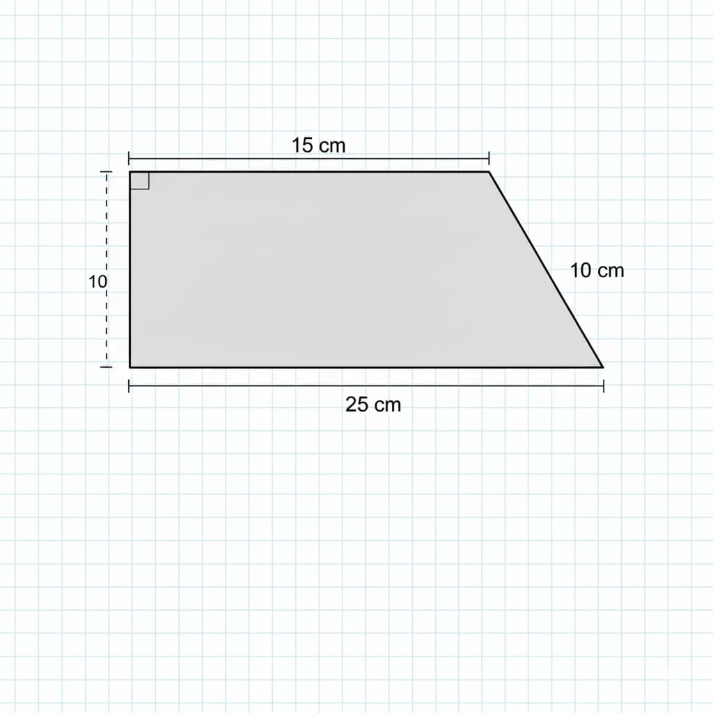

Evaluasi Geometri
1. Sebuah trapesium memiliki panjang sisi sejajar 15 cm dan 25 cm. Jika tinggi trapesium tersebut adalah 10 cm, berapakah luas trapesium tersebut?

2. Dika membuat bingkai foto berbentuk trapesium dari kayu. Panjang sisi atas bingkai adalah 20 cm, dan panjang sisi bawahnya adalah 30 cm. Panjang kedua sisi samping bingkai (sisi miring) masing-masing adalah 15 cm dan 17 cm. Dika ingin menghias sekeliling bingkai tersebut dengan tali. Berapakah panjang tali minimal yang dibutuhkan Dika untuk menghias bingkai tersebut?
3. Sebuah trapesium memiliki panjang keempat sisi berturut-turut 8 cm, 12 cm, 5 cm, dan 7 cm. Berapakah keliling trapesium tersebut?